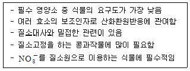
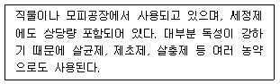
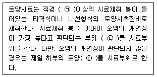
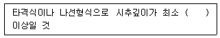
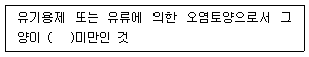
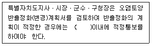
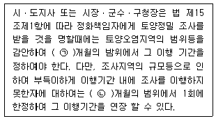

토양환경기사 (2021-03-07 기출문제)
1과목: 토양학개론
1. 토양반응에 관한 설명으로 옳지 않은 것은?
- 토양반응의 정도를 나타내기 위해 pH값이 많이 사용된다.
- 토양산성에 가장 큰 영향을 끼치는 이온은 탄산염, 중탄산염 및 인산염이다.
- 활산도는 토양용액에 해리되어 있는 수소이온과 알루미늄이온에 의한 산도이다.
- 잠산도는 토양입자에 흡착되어 있는 교환성 수소 및 교환성 알루미늄에 의한 산도이다.
(정답률: 39%)

2. 토양의 체분석 결과 D10=0.⑤mm, D30 = 0.25mm, D60 = 0.75mm일 때 곡률계수(Cz)는? (단, 입도 분포 곡선 기준)
- 0.43
- 0.89
- 1.34
- 1.67
(정답률: 55%)
3. 점토광물인 montmorillonite에 관한 설명으로 옳지 않은 것은?
- 대표적인 2:1 층상 광물이다.
- 수분조건에 따라 쉽게 팽창 또는 수축한다.
- kaolinite에 비하여 양이온교환능력이 매우 작다.
- 층 전하는 주로 Mg2+에 의한 AI3+의 동형친환에 의하여 발생한다.
(정답률: 59%)
4. 피압 대수층에서 단위 수위강하 혹은 수위상승에 의해 단위 면적을 통해 자유면대수층의 저류지하수로부터 유입 혹은 유출되는 물의 부피를 나타내는 지하수 및 대수층 관련 용어는?
- 비산출율
- 비저류계수
- 수리전도율
- 수두구배계수
(정답률: 39%)
5. 토양 내의 중금속에 관한 설명으로 옳지 않은 것은?
- 카드뮴 : 생물농축 되어 독성이 증가함
- 크롬 : 6가 크롬이 3가 크롬에 비하여 이동성이 크고 독성이 강함
- 비소 : 3가 비소가 5가 비소에 비하여 이동성이 크고 독성이 강함
- 수은 : 3가 수은이 0가 수은에 비하여 이동성이 크고 독성이 강함
(정답률: 39%)
6. 토양 유기물의 간접적인 기능 및 작용에 관한 설명으로 옳은 것은?
- 금속 이온과의 착체 형성
- 급격한 pH 변화에 대한 상승작용
- N, P, S 및 기타 필수 원소의 소비 작용
- 토양 화학성의 개선 및 토양구조의 활성화
(정답률: 28%)
7. 식물의 필수양분 중 다음 특성을 갖는 것은?

- Co
- Mo
- Ni
- S
(정답률: 40%)
8. 토양오염물질의 이동특성과 이동경로에 영향을 미치는 유기오염물질의 주요 인자로 가장 거리가 먼 것은?
- 증기압
- 용해도적
- 헨리상수
- 옥탄올/물 분배계수
(정답률: 50%)
9. 수리전도도(hydraulic conductivity)를 결정하는 주요 인자에 해당하지 않는 것은?
- 수두
- 중력가속도
- 유체의 밀도
- 유체의 점도
(정답률: 30%)
10. 에틸벤젠에 관한 설명으로 옳지 않은 것은?
- 25℃에서 증기압은 9.53mmHg 정도이다.
- 분자량은 120g/mol이며 휘발유 냄새가 난다.
- 흡입에 의한 만성증상으로 인간의 혈관계에 영향을 준다.
- 흡입에 의한 급성증상으로 목에 자극을 주거나 가슴이 답답해지는 현상을 유발한다.
(정답률: 30%)
11. 다음 중 토양의 수분보유능력이 가장 큰 토성은?
- 사토
- 양토
- 식토
- 마사토
(정답률: 44%)
12. 수리전도도(K) = 2.0×10-3 cm/s, 유효 공극률(ne) = 0.25, 수두구배(dh/dl) = 0.002 일 때 지하수의 평균선속도(cm/s)는?
- 2.0×10-6
- 1.2×10-6
- 1.6×10-5
- 2.2×10-5
(정답률: 38%)
13. 식물의 필수양분 중 다음 특성을 갖는 것은?

- 비소
- 시안
- 카드뮴
- 유기인
(정답률: 46%)
14. 비수용성유체(NAPL)의 이동과 분포에 영향을 미치는 주된 요인으로 가장 거리가 먼 것은?
- 누출 후 경과 시간
- 양이온 치환능에 따른 잔류 포화도의 크기
- 지하수면과 누출지점간의 거리 또는 불포화대 두께
- 지하의 수분 이동(불포화대) 또는 지하수 이동(포화대) 조건
(정답률: 32%)
15. 토양층위란 토양의 수직단면 성층구조를 뜻한다. 토양층위의 지표면으로부터 지하로의 구성순서로 옳은 것은? (단, 왼쪽에 있을수록 지표면과 가까움)
- A → B → C → R → O
- C → B → A → O → R
- O → A → B → C → R
- R → O → C → B → A
(정답률: 59%)
16. 토양에 사용되는 관개용수의 수질분석결과 Na+ = 150mg/L, Ca2+ = 170mg/L, Mg2+ = 155mg/L, K+ = 110mg/L일 때, 나트륨흡착비는?
- 0.86
- 1.22
- 2.00
- 2.82
(정답률: 28%)
17. 토양 중의 농약을 분해하는 주요 작용에 해당하지 않는 것은?
- 광분해
- 미생물분해
- 물리적분해
- 순수한 화학분해
(정답률: 43%)
18. 미나마타병 원인 물질로 신경계통에 장애를 주어 언어, 지각장애 등을 유발하는 오염물질은?
- 비소
- 수은
- PCB
- 카드뮴
(정답률: 59%)
19. 토양공기에 관한 설명으로 옳지 않은 것은?
- 토양공기 중의 질소함량은 대기 중의 질소함량과 비슷하다.
- 토양공기 중의 이산화탄소가 많아지는 양은산소가 줄어드는 양에 비례한다.
- 토양의 깊이가 깊어짐에 따라 산호함량이 적어지는 정도는 토양공극의 특성과 밀집한 관계가 있다.
- 심층토는 표층토에 비해 미세공극이 적어 산소의 공급이나 이산화탄소의 제거가 원활하지 않다.
(정답률: 25%)
20. 양이온교환능력(CEC) 값이 가장 작은 점토광물과 비표면적이 가장 큰 점토광물을 순서대로 나열한 것은?
- illite → vermiculite
- illite → montmorillonite
- kaolinite → vermiculite
- kaolinite → montmorillonite
(정답률: 44%)
2과목: 토양 및 지하수 오염조사기술
21. 토양오염공정시험기준의 자외선/가시관선분광법에 따라 토양 중의 6가트롬을 분석하고자 한다. 이 때 사용하는 자외선/가시선 분광광도계의 흡수셀에 관한 내용으로 옳지 않은 것은?
- 시료액의 흡수파장이 약 370nm이하일 때는 석영 흡수셀을 사용한다.
- 따로 흡수셀의 길이를 지정하지 않았을때는 15nm 셀을 사용한다.
- 시료셀에는 시험용액을, 대조셀에는 따로 규정이 없는 한 정제수를 넣는다.
- 시료액의 흡수파장이 약 370nm이상일 때는 석영 또는 경질유리 흡수셀을 사용한다.
(정답률: 45%)
22. 토양오염공정시험기준상의 페놀류 및 페놀류 기체크로마토그래피에 관한 내용으로 옳지 않은 것은?
- 정량한계는 페놀이 0.02mg/kg, 펜타클로페놀이 0.1mg/kg이다.
- 페놀류 분석을 위해 특별히 고안된 분석방법이므로 간섭물질이 있을 수 없다.
- 운반기체는 부피백분율 99.999%이상의 헬륨으로서 유량은 0.5~4m/min, 시료도입부 온도는 150~320℃로 한다.
- 토양 중 페놀 및 펜타클로로페놀을 아세톤/노말헥산(1:1)으로 추출하여 기체크로마토그래피로 정량하는 방법이다.
(정답률: 40%)
23. 토양오염공정시험기준 총칙에 따른 용어설명으로 옳지 않은 것은?
- “감압”이라 함은 따로 규정이 없는 한 15mmH2O이하를 말한다.
- “방울수”라 함은 20℃에서 정제수 20방울을 적하할 때, 그 부피가 약 1mL되는 것을 뜻한다.
- “정확히 단다”라 함은 규정된 양의 검제출 취하여 분석용 저울로 0.1mg까지 다는 것을 말한다.
- “항량으로 될 때까지 건조한다”라 함은 같은 조건에서 1시간 더 건조할 때 전후 무게차가 0.3mg이하일 때를 말한다.
(정답률: 55%)
24. 토양오염공정시험기준의 저장물질이 없는 누출검사대상시설 - 가압시험법에서 안정된 시험압력이라 함은 가압 후 유지시간동안의 입력강하가 시험압력의 몇 %이하인 것을 뜻하는가?
- 10%
- 15%
- 20%
- 25%
(정답률: 50%)
25. 토양오염공정시험기준의 자외선/가시선분광법에 따라 시료 중의 불소 함량을 측정하고자 한다. 검량선에서 얻어진 불소의 농도가 1.2mg/L일 때, 시료 중의 불소 농도(mg/kg)는? (단, 용액의 최종 부피 = 0.5L, 토양시료의 건조 중량 = 1.0g, 바탕시험용액의 불소 농도 = 0.2mg/L)
- 500
- 600
- 650
- 700
(정답률: 26%)
26. 토양오염공정시험기준 상의 토양오염관리대상시설지역의 시료 채취 및 보관에 관한 내용이다. ( )에 들어갈 내용은?

- ㉠ 2.5cm, ㉡ ±15cm, ㉢ 30cm
- ㉠ 2.5cm, ㉡ ±30cm, ㉢ 60cm
- ㉠ 5.0cm, ㉡ ±15cm, ㉢ 30cm
- ㉠ 5.0cm, ㉡ ±30cm, ㉢ 60cm
(정답률: 48%)
27. 토양오염공정시험기준의 저장물질이 누출검사대상시설-기상부의 시험법에 따라 시험을 수행할 때, 주의사항으로 옳지 않은 것은?
- 시험기간 동안 화기의 사용을 금한다.
- 기상변화가 심할 때는 시험을 실시하지 않는다.
- 미감압시험의 경우 30℃에서 저장물질의 정도가 450cSt이상일 때 적용한다.
- 시험기간 동안 진동 등 압력변화에 영향을 주는 경우가 없도록 하며, 시험 중 항상 압력을 관찰하도록 한다.
(정답률: 53%)
28. 토양오염공정시험기준 총칙에 따른 밀폐용기의 정의는?
- 취급 또는 저장하는 동안에 이물질이 들어가거나 내용물의 손실되지 아니하도록 보호하는 용기를 말한다.
- 취급 또는 저장하는 동안에 기체 또는 미생물이 침입하지 아니하도록 내용물을 보호하는 용기를 말한다.
- 취급 또는 저장하는 동안에 내용물이 광화학적 변화를 일으키지 아니하도록 방지하는 용기를 말한다.
- 취급 또는 저장하는 동안에 외부로부터 공기 또는 다른 가스가 침입하지 아니하도록 내용물을 보호하는 용기를 말한다.
(정답률: 44%)
29. 기체크로마토그래피의 머무를시간(retention time)에 관한 결정시험을 실시해야 할 경우에 해당하지 않는 것은?
- 컬럼교체
- 가스교체
- 기기의 고장수리
- 시료주입부 청소
(정답률: 34%)
30. 토양정밀조사의 조사절차에 해당하지 않는 것은?
- 기초조사
- 정밀조사
- 실태조사
- 개황조사
(정답률: 53%)
31. 토양환경보전법에 따라 오염영향지역의 부피가 13,⑤0m3인 폐기물 매립지역에 대하여 개황조사를 실시하고자 한다. 채취해야하는 표토시료의 개수(개)는? (문제 오류로 가답안 발표시 2번으로 발표되었으나, 확정답안 발표시 모두 정답처리 되었습니다. 여기서는 가답안인 2번을 누르면 정답 처리 됩니다.)
- 8
- 9
- 10
- 11
(정답률: 48%)
32. 자외선/가시선분광법에서 사용하는 흡수셀에 관한 내용으로 옳지 않은 것은?
- 석영제는 주로 자외부 파장범위에서 사용된다.
- 유리제는 주로 근적외부 파장범위에서 사용된다.
- 유리제는 주로 가시부 파장범위에서 사용된다.
- 플라스틱제는 근자외부 파장범위에서 사용된다.
(정답률: 50%)
33. 토양오염공정시험기준의 트리클로로에틸렌(TCE)-f퍼지-트랩 기체크로마토그래피에 관한 내용으로 옳지 않은 것은?
- 이 시험기준은 테트라클로로에틸렌의 분석에 적용 할 수 있으며 정량한계는 0.1mg/kg이다.
- 토양 중의 트리클로로에틸렌을 메틸알코올로 추출하여 얻은 시료용액을 기체크로마토그래프로 정량한다.
- 불꽃이온화검출기(FID)를 사용하여 유기할로겐화합물, 니트로화합물 및 유기 금속화합물을 선택적으로 검출한다.
- 내부표준법을 사용하여 크로마토그램으로부터 각 분석성분 및 내부표준물질의 봉우리 면적을 측정하여 휘발성 유기화합물의 피크면적과 내부표준물질의 봉우리 면적과의 비를 구한다.
(정답률: 32%)
34. 토양오염공정시험기준의 원자흡수분광광도법에 따라 토양 중의 아연을 분석하고자 한다. 검량선에서 얻어진 아연의 농도가 2.5mg/L일 때, 토양 중의 아연 농도(mg/kg)는? (단, 시료용기의 부피 = 0.1L, 수분 보정한 토양의 무게 = 2.7g, 바탕시험용액의 아연농도 = 0.2mg/L)
- 45.2
- 67.3
- 78.7
- 85.2
(정답률: 21%)
35. 토양오염공정시험기준의 이온크로마토그래피-자외선/가시선 분광법에 따라 토양 중의 6가 크롬을 분석하고자 한다. 이 때 사용하는 이온크로마토그래피-자외선/가시선 분광계의 구성 순서는?
- 액송펌프 → 용리액 저장조 → 시료주입부 → 분리컬럼 → PCR → UV/VIS 검출기 → 기록계
- 용리액 저장조 → 액송펌프 → 시료주입부 → 분리컬럼 → PCR → UV/VIS 검출기 → 기록계
- 용리액 저장조 → 시료주입부 → 액송펌프 → 분리컬럼 → PCR → UV/VIS 검출기 → 기록계
- 용리액 저장조 → 시료주입부 → 분리컬럼 → 액송펌프 → PCR → UV/VIS 검출기 → 기록계
(정답률: 38%)
36. 토양의 pH를 측정할 때 사용하는 pH 표준액 중 pH가 가장 중성에 가까운 것은?
- 인산염 표준액
- 수산염 표준액
- 탄산염 표준액
- 수산화칼슘 표준액
(정답률: 51%)
37. 토양오염공정시험기준의 비소-수소화물생성-원자흡수분광광도법에 관한 내용으로 옳지 않은 것은?
- 토양 중 비소의 정량한계는 0.10mg/kg이다.
- 비화수소를 원자화시켜 258nm에서 정량한다.
- 불꽃을 만들기 위한 가연성가스로 아세틸렌을, 조연성 가스로 공기를 사용한다,
- 좁은 선폭과 높은 휘도를 갖는 스펙트럼을 방사하는 비소속빈음극 램프를 광원으로 사용한다.
(정답률: 29%)
38. 토양오염공정시험기준에 따라 일반지역의 토양 시료를 채취할 때, 채취지점을 선정하는 방법으로 옳지 않은 것은?
- 농경지 : 대상지역 내에서 지그재그 형으로 5~10개 지점 선정
- 벤젠 : 농경지 또는 기타지역의 구분에 관계없이 대상지역을 대표할 수 있는 1개 지점 선정
- 유기인화합물 : 농경지 또는 기타지역의 구분에 관계없이 대상지역을 대표할 수 있는 1개 지점 선정
- 공장지역 : 대상지역의 중심이 되는 1개 지점과 주변 4방위의 3~5m 거리에 있는 1개 지점씩 총 5개 지점 선정
(정답률: 36%)
39. 토양오염공정시험기준의 퍼지-트랩 기체크로마토그래피-질량분석법에 따라 토양시료 중의 트리클로로에틸렌, 테트라클로로에틸렌 및 BTEX 등의 물질을 일반적으로 사용하는 용매는?
- 아세톤
- 부틸알코올
- 메틸알코올
- 디클로로메탄
(정답률: 41%)
40. 토양오염공정시험기준의 저장물질 없는 누출검사대상시설-가압시험법에 따라 누출여부를 측정할 때, 오류가 발생하는 원인으로 가장 거리가 먼 것은?
- 긴 시험압력 유지시간
- 최고 설정압력의 오류
- 측정기간중 과도한 온도변화에 의한 내용물의 체적변화
- 누출검사대상시설 이외의 연결관 및 연결부의 오류로 인한 누출
(정답률: 43%)
3과목: 토양 및 지하수 오염정화 기술
41. 식물정화법 중 오염물질이 뿌리 주변에 비활성의 상태로 축척되거나 식물체에 의하여 이동이 차단되는 원리를 이용한 방법은?
- 근권여과
- 식물분해
- 식물추출
- 식물안정화
(정답률: 41%)
42. 폐기물의 고형화 안전화의 장점으로 가장 거리가 먼 것은?
- 폐기물의 용해성이 감소한다.
- 폐기물의 부피감소가 가능하여 취급이 용이해진다.
- 폐기물의 비표면적증가로 매립지반의 안정성이 증가한다.
- 폐기물내의 오염물질이 특성형태에서 비독성형태로 변형된다.
(정답률: 41%)
43. 토양의 사막화 요인으로 가장 거리가 먼 것은?
- 가축의 과방목
- 염류직접 토양의 비율감소
- 식량생산을 위한 관개농업의 확대
- 토지확보를 위한 지나친 산림벌목
(정답률: 47%)
44. 생물학적 통기법에 관한 설명으로 옳지 않은 것은?
- 오염물질을 매우 낮은 농도까지 처리하기가 어렵다.
- 소요 장비의 조달이 용이하며 설치가 간단하다.
- 건물 하부와 같이 접근이 불가능한 곳에는 적용이 어렵다.
- 공기분산법, 지하수양수처리법 등의 정화기술과 조합이 가능하다.
(정답률: 46%)
45. 어느 건설 현장에서 공극률이 35%, 초기 수분포화도가 20%인 오염토양이 18000m3 발생했다. 이 오염토양의 수분 포화도를 60%로 조절하기 위하여 필요한 수분량(m3)은?
- 2520
- 3780
- 4680
- 7200
(정답률: 25%)
46. 저온열탈착법에 관한 설명으로 가장 거리가 먼 것은?
- 처리효율이 높고 적용범위가 넓다.
- 대부분의 석유계 화학물질 처리에 적용 가능하다.
- 다른 기술에 비해 에너지 비용이 많이 소요되는 것이 단점이다.
- 카드뮴, 수은 등을 비롯한 대부분의 중금속 처리에 효과가 탁월하다.
(정답률: 41%)
47. Air sparging에 관한 설명으로 옳지 않은 것은?
- 불균질 기질에는 적용이 어렵다.
- 피압대수층에는 적용이 불가능하다.
- 자유상 DNAPL의 제거 효율이 높다.
- 호기성 생분해 가능성이 높은 오염물질을 제거하는데 효과적이다.
(정답률: 35%)
48. 지하수와 오염물질의 수평이동을 제어하기 위하여 지중에 설치하는 수직 차단벽에 관한 설명으로 옳은 것은?
- 주변 지하 매질과 수직 차단벽의 수리전도도 차이가 작을수록 차단효과가 높다.
- 슬러리월(slurry wall)은 오염되지 않은 지하수를 오염된 지역으로부터 격리하는데 사용될 수 있다.
- 슬러리월(slurry wall)은 지하로의 침출수 흐름을 제어할 수 있으나 오염물질의 분해 또는 지체효과를 증진시킬 수는 없다.
- 슬러리월(slurry wall)은 주변보다 높은 수리전도도를 가진 물질을 사용하여 오염물질의 이동을 촉진시키는 방법이다.
(정답률: 32%)
49. 토양세척장치는 세척방식에 따라 분류될 수 있다. 스크루형 장치가 속하는 세척방식은?
- 회전형
- 교반형
- 진동형
- 유동형
(정답률: 32%)
50. Bioventing 기법을 적용하여 오염토양을 정화할 때, 영향을 미치는 인자와 그에 관한 내용으로 옳지 않은 것은?
- 중금속 처리농도 : 미생물의 활성을 유지하기 위한 중요한 인자이다.
- 오염물질의 특성 : 적용되는 오염물질은 휘발성 및 생분해성을 가지고 있어야 한다.
- 토양의 투수성 : 오염물질의 휘발작용과 미생물에 공급할 수 있는 산소량을 결정하는 요소이다.
- 토양 함수율 : 함수율이 너무 높은 경우에는 공기투과성이 감소하며, 너무 낮은 경우에는 미생물의 활성이 감소한다.
(정답률: 38%)
51. NO2를 NO3로 산화시키는 질산화 미생물은?
- nitrobacter
- thiobacillus
- nitrosomonas
- rhodopseudomonas
(정답률: 43%)
52. 6가크롬으로 오염된 토양을 생물학적으로 정화할 때에 관한 설명으로 옳지 않은 것은? (단, 환원처리조에서 토양을 처리)
- 분리조로부터 순산화크롬이 분리된다.
- 영양분과 세균을 환원처리조에 첨가한다.
- 6가크롬은 물에 용해되기 어려우므로 우선 폭기조로 산화시킨다.
- 환원처리조에서 세균의 호흡에 의해 산소가 소실되면 6가크롬의 환원이 시작된다.
(정답률: 37%)
53. 양수처리법을 적용하여 지하수를 정화하고자 한다. 오염운을 포함하고 있는 대수층의 부피가 20000m3, 토양의 단위용적밀도가 1.6g/cm3, 양수펌프의 용량이 400L/h 일 때, 오염운을 제거하는데 걸리는 시간(d)은? (단, 토양입자의 밀도는 2.65g/cm3 이고 지속적인 오염유입은 없음)
- 825
- 867
- 908
- 950
(정답률: 22%)
54. 양수처리법을 적용하여 오염부지를 정화할 때, 포획구간의 범위 결정과 관계없는 것은?
- 양수량
- 용해도
- 수리구배
- 지하수층 두께
(정답률: 32%)
55. 열탈착기술에 관한 설명으로 옳지 않은 것은?
- 열탈착공정에서 발생하는 가스량은 같은 용량의 소각공정에 비해 적다.
- 유기염소 및 유기인 살충제를 처리할 때 퓨란과 다이옥신류가 생성되지 않는다.
- 휘발성 유기화합물(VOCs)뿐만 아니라 준휘발성 유기화합물(SVOCs)도 제거 가능하다.
- 탈착속도는 유기물질의 화학구성에 큰 영향을 받는데 일반적으로 분자량이 클수록 탈착속도가 빠르다.
(정답률: 46%)
56. 동전기정화기술을 적용하여 토양내의 중금속을 탈착시킬 때, 양극에서 중금속 탈착에 기여하는 물질이 생성되는 현상에 관한 반응식은?
- 2H2O + 4e-→ O2 ↑ + 4H+
- 2H2O + 2e-→ O2 ↑ + 4H+
- H2O + 4e- → O2 ↑ + 2H+
- H2O + 4e- → O2 ↑ + 2OH-
(정답률: 48%)
57. 자연정화법에 관한 설명으로 옳지 않은 것은?
- 종합적인 정화방법의 일개부분으로 사용된다.
- 모든 오염물질의 정화에 사용될 수 있는 효과적인 정화방법이다.
- 장시간의 모니터링이 필요하여 다른 정화기법에 비해 비용이 많이 들 수 있다.
- 오염물질이 더 이상 확산되지 않고 감소하고 있음을 증명하기 위한 주기적인 실험과 자료 수집이 필요하다.
(정답률: 34%)
58. 토양의 열처리공정에 관한 설명으로 옳지 않은 것은?
- 발생원으로 고온의 기름, 용융염 등이 사용된다.
- 스팀주입공법은 원위치(in-site)처리방법이다.
- 유동상 탈착장치 내에서 오염토양은 중력에 의하여 유동된다.
- 로타리킬른(rotary kilns)이 회전함에 따라 내부의 폐기물이 산소와 연속적으로 접촉함으로서 연소된다.)
(정답률: 25%)
59. 반응벽체공법을 적용하여 오염지하수를 처리하고자 한다. 오염지하수의 Darcy 속도가 5m/d이고 반응벽체의 길이가 5m, 반응벽체의 공극률이 0.65 일 때, 오염지하수가 반응벽체내에 체류하는 시간(h)은?
- 12.6
- 13.6
- 14.6
- 15.6
(정답률: 26%)
60. Bioventing 기법을 적용하여 오염토양을 정화하기 위해서는 대상 부지에 대한 정확한 산소소모율 산정이 중요하다. 이를 구하기 위하여 필요한 인자로 가장 거리가 먼 것은?
- 토양 공극률
- 주입공기 유량
- 초기산소 농도
- 토양입자 밀도
(정답률: 45%)
4과목: 토양 및 지하수 환경관계법규
61. 토양오염조사 기관을 지정하는 행정기관장은?
- 시·도지사
- 환경부장관
- 군수·구청장
- 지방 유역환경청장
(정답률: 26%)
62. 토양정화업의 등록요건 중 반입정화시설에 관한 기준은?
- 정화시설 200m2이상, 보관시설 200m2이상
- 정화시설 400m2이상, 보관시설 200m2이상
- 정화시설 200m2이상, 보관시설 400m2이상
- 정화시설 400m2이상, 보관시설 400m2이상
(정답률: 39%)
63. 특정토양오염관리대상시설의 설치자가 특정토양오염관리대상시설별로 설치하여야 하는 토양오염방지시설에 해당하지 않는 것은?
- 누출된 오염물질의 위해성과 독성을 측정하는데 필요한 시설
- 누출될 경우에는 대비한 오염확산방지 또는 독성저감등의 조치에 필요한 시설
- 토영오염물질이 누출되지 아니하도록 하기 위한 이중벽탱크 등의 누출방지시설
- 지하에 매설되는 저장시설의 경우 토양오염물질이 누출되는 것을 감지하거나 누출여부를 확인할 수 있는 측정기기 등의 시설
(정답률: 36%)
64. 정화책임자가 오염토양개선사업 계획의 승인을 얻고자 할 때, 개선사업계획(변경)승인 신청서를 사업개시일 며칠 전까지 특별자치시장ㆍ특별자치도지사ㆍ시장ㆍ군수ㆍ구청장에게 제출하여야 하는가?
- 7일
- 15일
- 20일
- 30일
(정답률: 31%)
65. 토양환경평가에 관한 내용으로 옳지 않은 것은?
- 토양환경평가의 결과는 양도·양수 시점의 토양오염 정도를 나타내고 있어야 한다.
- 토양오염관리대상시설이 설치되어 있거나 설치되어 있었던 부지에 대하여 실시 할 수 있다.
- 토양오염의 우려가 있는 토지를 양도·양수하는 경우에 실시할 수 있다.
- 토양오염의 우려가 있는 토지를 임대·임차하는 경우에 실시할 수 있다.
(정답률: 24%)
66. 위해성 평가 대상 오염물질에 해당하지 않는 것은? (단, 중금속류 기준)
- 구리
- 시안
- 니켈
- 아연
(정답률: 33%)
67. 토양정화업을 변경등록하여야 하는 경우에 해당하지 않는 것은?
- 대표자의 변경
- 기술인력의 변경
- 상호 또는 사업장 소재지의 변경
- 운행 차량(임시 차량 포함)의 증차
(정답률: 41%)
68. 토양오염조사기관의 장비 중 자가동력시추기에 관한 지정기준이다. ( )안에 들어갈 내용으로 옳은 것은?

- 22m
- 4m
- 6m
- 8m
(정답률: 51%)
69. 토양관련 전문기관 또는 토양정화업의 기술인력이 보수 교육을 받아야 하는 주기는?
- 신규교육을 받은 날을 기준으로 3년마다 8시간
- 신규교육을 받은 날을 기준으로 3년마다 24시간
- 신규교육을 받은 날을 기준으로 5년마다 8시간
- 신규교육을 받은 날을 기준으로 5년마다 24시간
(정답률: 53%)
70. 특정토양오염관리대상시설의 토양오염검사 면제조건에 해당하지 않는 경우는?
- 유해화학물질관리법 규정에 의한 안전검사를 받은 경우
- 송유관으로서 유류의 유출여부를 확인할 수 있는 장치가 설치된 경우
- 검사항목이 같은 종류의 토양오염물질로 저장물질을 변경하고자 하는 경우
- 토양시료의 채취가 불가능하다고 토양오염조사기관이 인정하는 경우
(정답률: 18%)
71. 토양정화업의 등록을 한 자에게 위탁하지 아니하고 정화책임자가 직접 정화할 수 있는 경우에 관한 기준이다. ( )안에 들어갈 내용으로 옳은 것은?

- 5m3
- 10m3
- 30m3
- 50m3
(정답률: 41%)
72. 토양환경평가를 위한 조사 중 시료의 채취 및 분석을 통해 토양오염 여부를 조사하는 것은?
- 정밀조사
- 기초조사
- 정도조사
- 개황조사
(정답률: 36%)
73. 지하수 오염을 방지하기 위한 각종 관리에 내용으로 옳지 않은 것은?
- 오염지하수정화계획을 승하는 경우에는 정화사업의 시행기간을 명시하여야 한다.
- 환경부장관은 지하수 오염방지를 위하여 특히 필요하다고 인정될 경우 시설의 설치자 또는 관리자에게 지하수오염방지를 위한 조치를 하도록 명할 수 있다.
- 정화명령을 받은 지하수오염유발시설 관리자는 대통령령이 정하는 바에 따라 오염지하수정화계획을 작성하여 환경부장관에게 제출하여 승인을 얻어야 한다.
- 환경부장관은 수질측정결과 지하수 수질이 환경부령으로 정한 기준에 적합하지 아니할 경우 오염원 인자인 지하수오염유발시설 관리자에게 수질 복원을 위한 정화작업을 명할 수 있다.
(정답률: 32%)
74. 토양보전대책지역의 지정표지판에 관한 내용으로 가장 거리가 먼 것은?
- 지정목적을 표기한다.
- 토양보전대책지역 내역(주소, 면적, 약도)을 표기한다.
- 흰색바탕의 표지판에 검정색 페인트를 사용하여 표기한다.
- 표지판의 규격은 가로 3m, 세로 2m, 높이 1.5이상으로 하여야 한다.
(정답률: 46%)
75. 지하수오염유발시설의 설치자 또는 관리자가 지하수오염방지를 위하여 취하여야 할 조치에 해당하지 않는 것은?
- 지하수오염물질 누출방지시설의 설치
- 지하수오염물질 누출여부를 확인할 수 있는 시설의 설치
- 지하수오염유발시설의 1m 이격거리에 지하수오염관 측정의 설치
- 지하수 수질의 정기적 측정 및 시장·군수·구청장에 대한 수질측정결과의 보고
(정답률: 38%)
76. 토양관련전문기관이 토양오염검사를 실시한 후 누출에 관한 검사 결과를 통보할 대상에 해당하지 않는 것은?
- 지방환경청장
- 관할 소방서장
- 관할 시장·군수·구청장
- 특정토양오염유발시설의 설치자
(정답률: 20%)
77. 지하수보전구역에서 대통령령이 정하는 규모이상의 지하수를 개발·이용하는 행위를 하고자 하는 자는 시장·군수의 허가를 받아야 한다. 여기서 “대통령령이 정하는 규모이상”에 해당하는 경우는?
- 1일 양수능력이 30톤이상인 경우
- 1일 양수능력이 50톤이상인 경우
- 1일 양수능력이 70톤이상인 경우
- 1일 양수능력이 100톤이상인 경우
(정답률: 39%)
78. 오염토양의 반출절차 및 방지법에 관한 내용이다. ( )안에 들어갈 내용으로 옳은 것은?

- 7일
- 10일
- 15일
- 30일
(정답률: 18%)
79. 토양정밀 조사명령에 관한 내용이다. ( )안에 들어갈 숫자를 순서대로 나열한 것은?

- ㉠ 6, ㉡ 6
- ㉠ 8, ㉡ 6
- ㉠ 6, ㉡ 8
- ㉠ 8, ㉡ 8
(정답률: 45%)
80. 토양보전대책지역의 토양보전대책을 위한 계획에 포함되는 오염토양개선사업에 해당하지 않는 것은?
- 오염된 수로의 준설사업
- 오염토양 처리기술 개발·개선사업
- 오염물질의 흡수력이 강한 식물식재사업
- 객토 및 토양개량제의 사용등의 농토배양사업
(정답률: 33%)